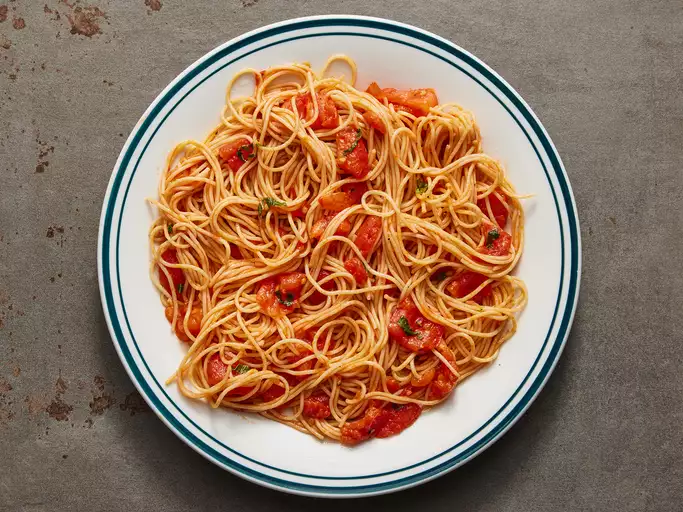

Pasta

Description
For this simple garlic and tomato pasta recipe, there is nothing nicer than the flavor of fresh tomatoes. You can use
canned, but the trouble you take to prepare this dish is worth it. You prepare the sauce while the pasta is cooking,
no long hours of waiting. Great if you want meatless pasta.
Ingredients
Steps
- Place tomatoes in a large pot and cover with cold water. Bring just to a boil. Pour off water, and cover again
with cold water. Peel the skin off tomatoes and cut into small pieces.
- Bring a large pot of lightly salted water to a boil. Cook angel hair pasta in the boiling water, stirring
occasionally, until tender yet firm to the bite, 4 to 5 minutes.
- Meanwhile, heat olive oil in a large skillet or pan, making sure there is enough to cover the bottom of the pan,
and sauté garlic until opaque but not browned. Stir in tomato paste. Immediately stir in the tomatoes, salt, and
pepper. Reduce heat, and simmer until pasta is ready, adding basil at the end.
- Drain pasta, do not rinse in cold water. Toss with a bit of olive oil, then mix into the sauce.
- Reduce heat as low as possible. Keep warm, uncovered, for about 10 minutes when it is ready to serve. Garnish
generously with fresh Parmesan cheese.